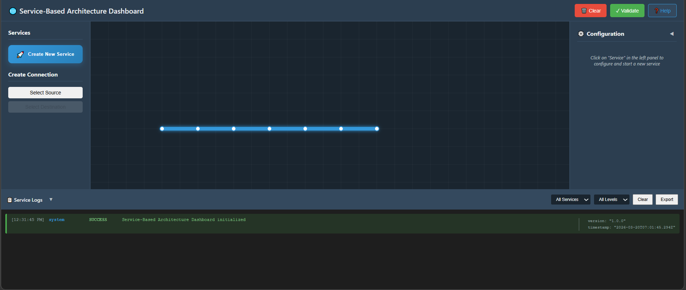
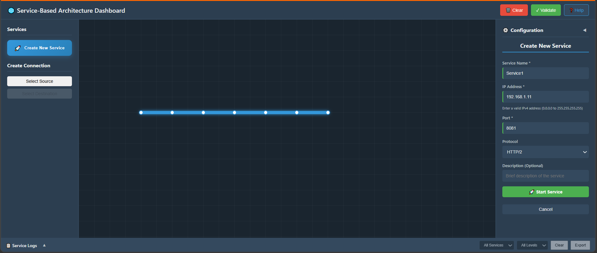
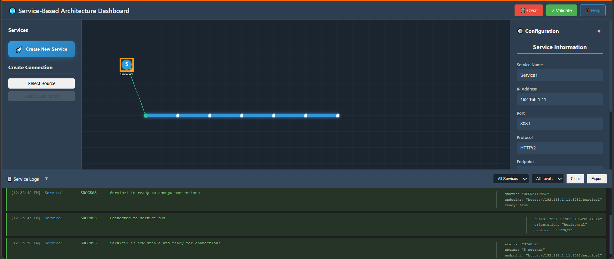
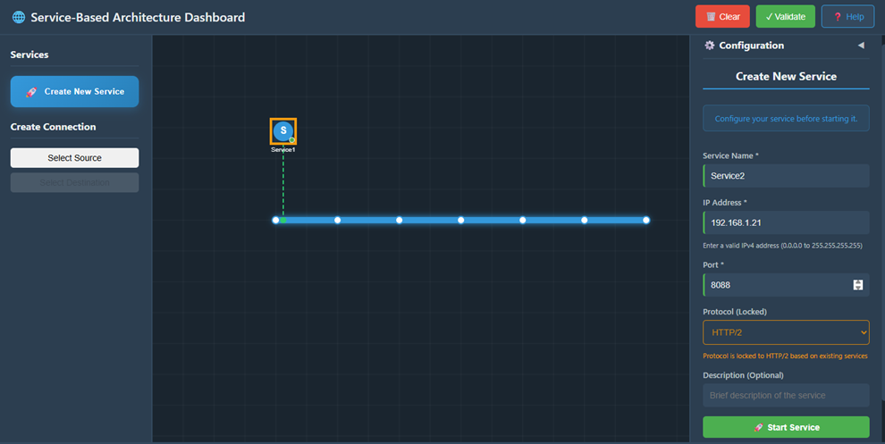
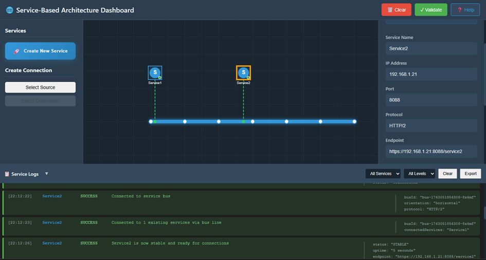
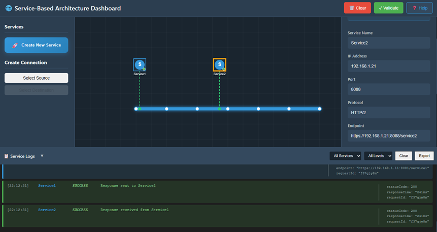
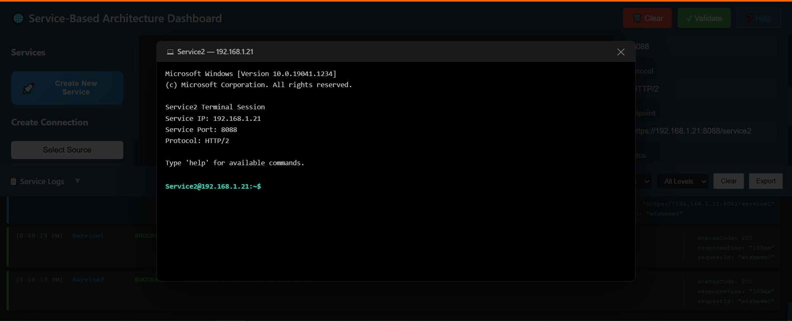
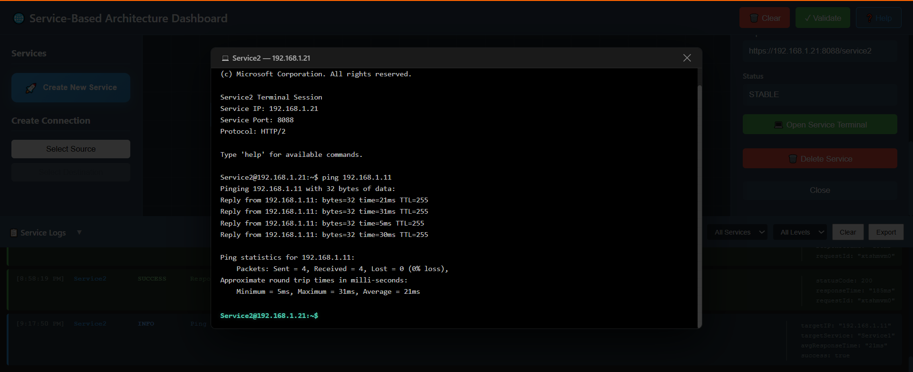

Implement Service-Based Architecture (SBA)
Learning Objectives
Before starting this experiment, understand that you will be:
- Designing autonomous services – Creating independent, self-contained services that operate within a distributed system
- Configuring service identity – Using network addresses (IP, port) to make services discoverable and reachable
- Establishing inter-service communication – Connecting services so they can collaborate and exchange information
- Validating network connectivity – Testing the actual communication pathways between services
- Observing system behavior – Using logs to understand how services interact and troubleshoot issues
In Service-Based Architecture (SBA), each service is a loosely coupled, independently deployable component responsible for specific business capabilities. Services communicate over a network using defined protocols (HTTP/1 or HTTP/2), and this communication must be reliable and discoverable.
Step 1: Create and Start Service 1
Conceptual Overview
In this step, you'll create the first autonomous service. Think of this as registering a new participant in a distributed system. Each service needs:
- A unique name for identification
- A IP address so other services can locate it on the network
- A port number to specify which application on that IP address will handle requests
- A communication protocol (HTTP/1 or HTTP/2) that defines how data is transmitted
When you deploy Service1, the system assigns it a unique identity and initializes it as an independent service instance ready to receive and process requests.
1.1 Start Service Creation
Click the Create New Service button located in the Services Panel on the dashboard. This opens the configuration panel for a new service.

Fig: Service-Based Architecture Dashboard
1.2 Configure Service 1
In the Service Configuration Panel, enter the following details:
What each parameter means:
Service Name: Enter Service1.
- The service name is a logical identifier that humans and systems use to refer to this service. It's stored in a service registry so other services can locate it by name.
IP Address: Provide a valid IPv4 address. Example: 192.168.1.11
- An IPv4 address is a unique identifier for a machine (or virtual machine) on the network. It's like a mailing address.
- Other services use this address to route network packets to your service's location. Different IP addresses ensure services can be distributed across multiple machines.
Port: Specify a valid port number, such as 8081 or according to your setup.
- A port is a logical endpoint on a machine. A single IP address can host multiple services, each listening on a different port (e.g., 8081, 8088, 9000).
- The port number tells the operating system which application to deliver incoming requests to. Think of IP as the street address and port as the apartment number.
Protocol: Select the required protocol from the dropdown: HTTP/1 or HTTP/2
- The protocol defines the rules for communication. HTTP/2 is faster and more efficient than HTTP/1, allowing multiplexing (multiple requests simultaneously).
- All services that want to communicate with Service1 must use the same protocol. This ensures compatibility and efficient data exchange.

Fig: Configure the Service
1.3 Start Service 1
Click the Start Service button to initialize and deploy Service1.
What happens when you click Start Service:
- The system instantiates (creates) a new service instance with your configuration
- Service1 initializes its internal state and prepares to receive requests
- The service registers itself in the service registry with its name, IP, port, and protocol
- The service enters a "listening" state on the specified port and waits for incoming requests
- Resource state is set to "Stable" once initialization completes

Fig: Service1 is now Stable
1.4 Verify Service 1 Logs
After starting the service:
- Wait about 5 seconds for initialization.
- Scroll to the Service Logs Panel at the bottom.
- Look for log messages such as:
- Service1 initialized successfully
- Service1 is now active
Logs are a critical tool in distributed systems. They provide visibility into service behavior. The messages you see indicate:
- initialized successfully – The service completed its startup sequence without errors
- is now active – The service is listening for incoming requests and ready to process them
If you don't see these messages after 5 seconds, the service may have failed due to configuration errors (e.g., port already in use, invalid IP address). Logs are essential for troubleshooting such issues in production systems.
Step 2: Create Service 2 and Establish Connection
Conceptual Overview
Now you'll create a second autonomous service and observe how services discover and communicate with each other. In a distributed system:
- Multiple services coexist independently
- Each maintains its own state and logic
- Services communicate via well-defined network protocols
- Service discovery (finding where other services are) is automatic in many systems
When Service2 starts, the simulation will demonstrate automatic service-to-service communication – Service1 will detect Service2's presence and establish communication pipes. This is a core pattern in SBA called "service orchestration."
2.1 Create Service 2
Click the Create New Service button again to start creating your second service.
2.2 Configure Service 2
In the configuration panel, fill in:
Configuration details:
Service Name: Enter Service2.
- Note: This must be different from Service1 so the system can distinguish between them.
IP Address: Provide a different valid IPv4 address. Example: 192.168.1.21
Port: Enter a port number such as 8088.
- Each service needs a unique network endpoint. If they used the same port number on the same IP, there would be conflicts.
Protocol: It may auto-select based on Service1's protocol. Otherwise, select HTTP/2 manually.
- All services communicating with each other must use the same protocol. The system enforces this automatically to ensure compatibility.

Fig: Configure the Service
2.3 Start Service 2
Click Start Service to deploy and activate Service2.
What happens during Service2 startup:
- Service2 initializes and registers itself in the service registry
- The system automatically discovers that Service1 is already running
- Service2 notifies Service1 of its presence (service discovery event)
- Both services begin establishing communication channels
- The inter-service communication link becomes active
This automatic service discovery is a key feature of SBA – services don't need manual configuration to find each other; the infrastructure handles it.

Fig: Service2 is now Stable
2.4 Verify Inter-Service Connection Logs
Once Service2 starts:
- Open the Service Logs Panel again.
- Look for logs showing communication between Service1 and Service2:
- Service1 → Response sent to Service2
- Service2 → Response received from Service1
Understanding the logs: These two log messages reveal a critical aspect of service communication:
- Service1 → Response sent to Service2 – Service1 is acting as a provider/server, sending data to Service2
- Service2 → Response received from Service1 – Service2 is acting as a consumer/client, receiving data from Service1
This demonstrates bidirectional communication – services can both send and receive data. In SBA, services often play multiple roles:
- Provider role: Offering functionality to other services
- Consumer role: Using functionality from other services
- Orchestrator role: Coordinating multiple service calls
These logs confirm that the communication protocol is working correctly and data is flowing between services without errors.

Fig: Verify the Request/Response Logs
Step 3: Validate Connectivity
Overview
So far you've created services and observed logs showing they're communicating. However, SBA systems must be continuously validated to ensure reliability. In this step, you'll conduct an explicit connectivity test to verify that the underlying network path between services is functional. This is essential because:
- Logs can be misleading – A service might log a message but the actual network delivery could fail
- Network issues are common – Firewalls, routing problems, or misconfigurations can break service-to-service communication
- Production systems require verification – You can't assume connectivity works; you must test it
- Troubleshooting skills are critical – Understanding how to diagnose connectivity issues is essential for operating distributed systems
The ping command is a fundamental network diagnostic tool. It sends small probe packets (ICMP echo requests) to a target IP address and waits for responses. The results tell you:
- Whether the target service is reachable
- How fast the network connection is (latency)
- Whether packets are being lost (packet loss %)
3.1 Open Terminal for Service2
- Click on the Service2 icon on the dashboard.
- In the right-hand configuration panel, scroll down.
- Click the Open Service Terminal button.
This opens a dedicated terminal window showing:
- Service Name – Which service this terminal belongs to (Service2)
- Service IP – The network address of this service (e.g., 192.168.1.21)
- Port – The port this service is listening on
- Status – Current operational state of the service
We're testing whether Service2 can reach Service1. By opening Service2's terminal, we simulate sending network requests from Service2's context.

Fig: NF Terminal
3.2 Execute a Ping Command
In the terminal command input box, type the ping command with Service1's IP address:
ping <Service1_IP>
Example (if Service1's IP is 192.168.1.21):
ping 192.168.1.21
What the ping command does:
- Sends 4 probe packets (echo requests) to the target IP address
- Waits for responses from the target
- Measures the round-trip time (RTT) for each packet
- Reports success/failure and network statistics
3.3 Send Command
Click the Send button to execute the ping command.
What happens during execution:
- The system sends the ping request from Service2
- The network routes the request to Service1's IP address
- Service1 receives the probe and sends a response back
- Service2 receives the response and records the latency
- This repeats for 4 packets

Fig: Ping Test
3.4 Analyze Connectivity Results
Check the terminal output:
- You should see multiple lines like: "Reply from 192.168.1.18: bytes=32 time<1ms"
- After completion, a summary appears showing:
- Packets Sent: 4 – Four probe packets were transmitted
- Packets Received: 4 – All four packets were successfully delivered and responses came back
- Packet Loss: 0% – No packets were lost in transit
Interpreting the results:
| Metric | What It Means | Good vs. Bad |
|---|---|---|
| Packets Received = Packets Sent | All probes reached the destination | Good – indicates a healthy network path |
| Packet Loss: 0% | No data was lost during transmission | Good – critical for reliable service communication |
| time < 1ms | Very low latency (fast response) | Good – services can communicate rapidly |
- 0% Packet Loss is crucial for SBA. If packets are being dropped (>0% loss), services may experience timeouts or message loss
- Low Latency indicates efficient network performance. High latency (>100ms) might cause service timeouts
- Successful ping proves the network layer is functional and the services are reachable
Troubleshooting scenarios: If you see different results:
- Packets Received < Packets Sent: Some packets didn't return → possible network congestion or firewall blocking
- High Packet Loss (>10%): Unreliable network → service communication may fail intermittently
- Very high latency (>1000ms): Network is slow → services may timeout waiting for responses
- Destination Unreachable error → Service1 is unreachable → check if Service1 is running and IP address is correct
This connectivity validation completes the experiment and demonstrates the full lifecycle of distributed service communication: service creation → service discovery → service communication → connectivity validation.